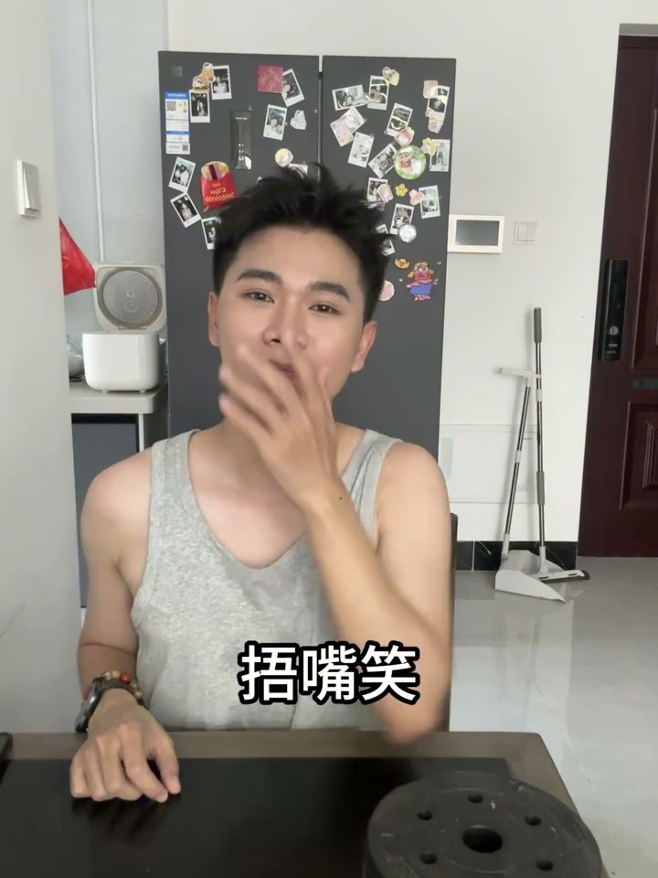

内容要点
利用生日道具和表情变化，拍出生日氛围感照片的四组姿势。
知识结构
[00:00→00:01]
墨镜+嘟嘴许愿
戴上墨镜，嘟嘴做许愿表情，双手合十或放在胸前。墨镜增加酷感，嘟嘴和许愿动作则注入俏皮和生日仪式感。
[00:03→00:05]
蛋糕+仰头笑
手持蛋糕作为道具，向上仰头露出自然的笑容。仰头可以避开双下巴，同时让笑容看起来更放松、更有感染力。
[00:06→00:08]
捂嘴笑+搭手
用手半遮嘴部笑，另一只手自然搭放。捂嘴笑能制造"偷着乐"的俏皮感，比正面露齿笑更有故事性。
[00:10→00:11]
张嘴笑+头部微倾
嘴巴自然张开做大笑状，头部微微倾斜，制造随性抓拍的感觉，避免过于端正的摆拍。
核心结论
生日照片的关键不是蛋糕好不好看，而是表情的变化层次——从许愿的虔诚到大笑的释放，用四种不同情绪状态构建有节奏的组图。
图文实录
姿势一：墨镜许愿风
00:00 – 00:01
UP 主第一个动作是"戴上墨镜，嘟嘴许愿"。墨镜遮挡了眼睛，注意力转移到嘟起的嘴唇和许愿的手势上。墨镜+嘟嘴的组合形成了一种反差——上半张脸酷、下半张脸萌。
[00:01] 戴墨镜嘟嘴许愿：墨镜遮眼+嘟嘴的表情反差组合
Sunglasses + pouty wish: the contrast of covered eyes and a pouting face
姿势二：蛋糕仰头笑
00:03 – 00:05
"拿蛋糕，仰头笑"——利用生日蛋糕作为道具，将蛋糕举在身前，头部后仰露出笑容。"吸气鼓"可能是"吸一口气鼓起腮帮"的意思，配合仰头增加脸颊线条。这个姿势的关键是仰头角度：不要完全朝天，微仰 15-30 度即可。
[00:04] 拿蛋糕仰头笑：蛋糕做前景+仰头避双下巴+自然笑容
Cake + head-raised laugh: cake as foreground + chin-up avoiding double chin + natural smile
姿势三：捂嘴笑+搭手
00:06 – 00:08
"捂嘴笑，搭手"——一只手半遮嘴巴做害羞/俏皮的笑容，另一只手自然搭在腿上或桌上。捂嘴笑这个动作本身就在讲述一个"发生了什么好笑的事"的故事，比直接对着镜头咧着嘴笑更有画面外的想象空间。

[00:07] 捂嘴笑搭手：半遮面制造俏皮感，单手搭放保持松弛
Hand-muffled laugh with a resting hand: half-covered face for playfulness, one hand relaxed
姿势四：张嘴笑+头部微倾
00:10 – 00:11
"张嘴照片，头微倾"——嘴巴自然张开露出牙齿，头部向一侧微微倾斜。这是最释放的一个表情，适合放在组图的最后一张，作为从"许愿"到"大笑"的情绪递进终点。
[00:11] 张嘴笑：最释放的表情，作为组图的情绪高潮
Open-mouth laugh: the most releasing expression, serving as the set's emotional peak